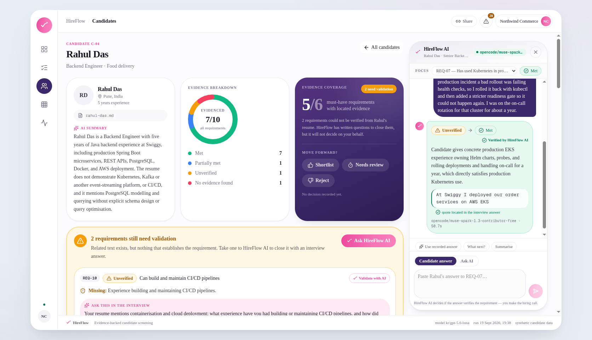
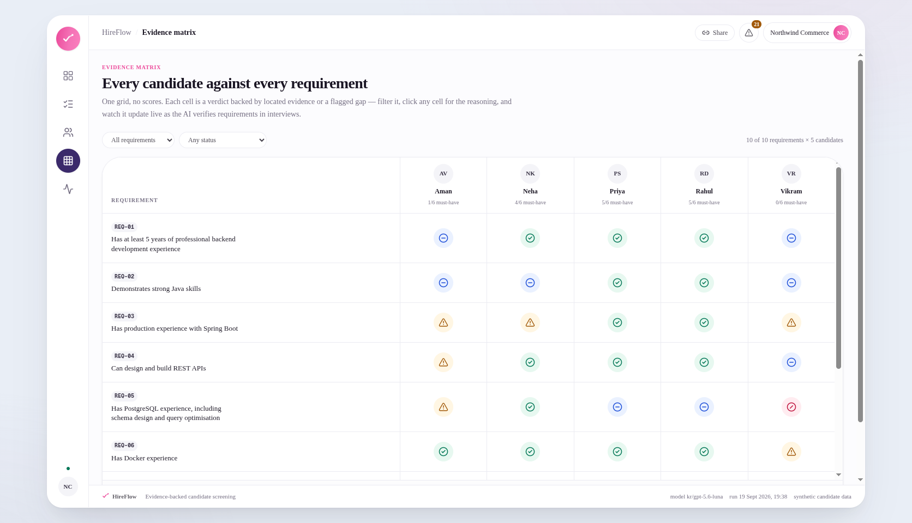
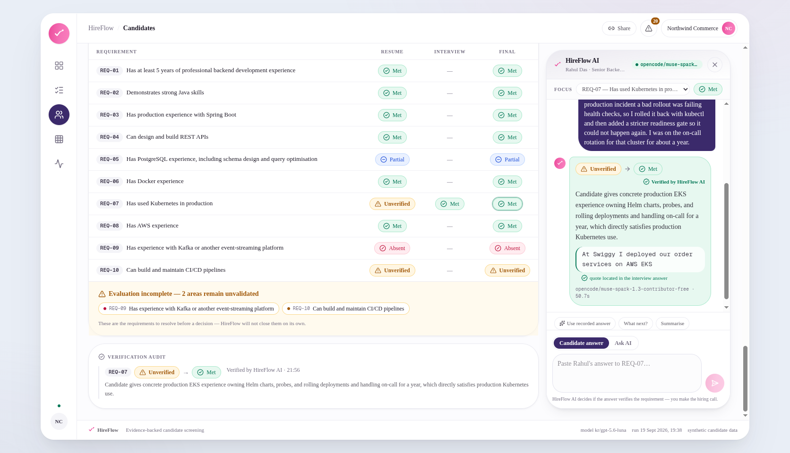

The capstone project explicitly used Docker and Docker Compose to run the application locally, demonstrating Docker experience.
"Ran the application locally with Docker Compose."
HireFlow reads a job description and a stack of resumes, then produces a screening report where every claim points back to the exact line of the source document it came from. When a claim can't be grounded, HireFlow refuses it and asks the question instead.
The idea in one sentence
The model returns candidate claims with quotes. A verifier written in plain Python — no model call anywhere inside it — then goes and locates each quote in the source document. If the quote can't be found, the claim is refused and the requirement is flagged for a human instead of being marked satisfied.
That single boundary is what makes the output defensible. The component that decides truth structurally cannot hallucinate, because it cannot generate text.
Requirement statuses
| Status | Rule |
|---|---|
| Met | Explicit evidence satisfies the requirement |
| Partial | Explicit evidence satisfies part of the requirement |
| Unverified | Related evidence exists, but the required detail is not demonstrated |
| Absent | No relevant evidence found at all |
Unverified is the status that matters. A resume saying "containerised microservices with Docker" against a requirement of "Kubernetes in production" is not a match — it's a question to ask.
Real output, one candidate
These are unedited findings from the recorded run — Senior Backend Engineer at Northwind Commerce, candidate C-01. Notice the difference between the two Spring Boot findings: the same quote, read twice, at two different levels of confidence.
The capstone project explicitly used Docker and Docker Compose to run the application locally, demonstrating Docker experience.
"Ran the application locally with Docker Compose."
Spring Boot is used in a university capstone project, but the resume does not demonstrate production experience with Spring Boot.
"Built a campus event management system using Spring Boot and Docker."
"Your resume shows Spring Boot use in a university capstone project. What experience have you had deploying and maintaining Spring Boot applications in a production environment, and what responsibilities did you personally own after deployment?"
The resume contains no evidence of Kafka or another event-streaming platform.
The model proposed related text. The verifier could not locate a supporting quote, so the claim was refused and this requirement stayed open for a human.
The resume evidences six months of professional software engineering internship experience, but it does not show at least five years of professional backend development.
"Fixed bugs in a Java monolith and wrote unit tests."
The product
Intake, requirement coverage, the candidate pool, the evidence matrix and a full audit trail — every screen reads from a recorded run, so the whole app works with no model access at all.



The recorded run
Stack & architecture
evidence_sufficient? routes either to a verified finding or to a generated
interview question. The verifier node is plain Python and is covered by unit tests — the
part that decides truth is the part with no model in it.
Next.js App Router with React and Tailwind. API routes hold the prompts and the model key server-side; the browser never sees credentials.
Python and LangGraph against an OpenAI-compatible chat endpoint. Batched one call per candidate, run concurrently.
Pure Python, no model call. Tries to locate each proposed quote in the source document, and refuses the claim when it can't.
Findings carry their own provenance — finding id, confidence, the model that produced them and a timestamp — visible behind Why? on every claim.
12 of 13 required capabilities covered. Capability 5 — explicit candidate grouping — was deliberately deprioritised: with five candidates, the evidence matrix and the natural-language query already covered it.